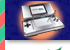 |
|
お楽しみ度MAXなニンテンドーDSの同時発売ソフトとしてリリースされる『直感ヒトフデ』。
白と黒を基調にしたシンプル×シックなパズルゲームですが、タッチペンでひとふで書きというスタイルが新境地を予感させ、、待ちきれないユーザーも多いのでは？開発は株式会社ミッチェル。オフィスへお邪魔して、みなさんのお話を伺ってきました！
|
| 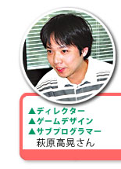 |
 |
|
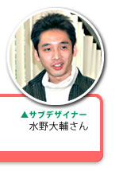 |
| 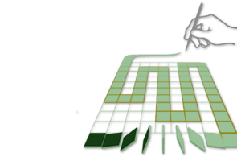 |
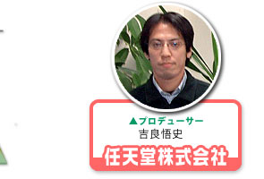 |
|
 |
N.O.M ミッチェルさんはこれまでどういったゲームを作ってこられたんでしょう。
萩原 もともとアーケードゲームを主に開発していたので、コンシューマーはこれが初めてなんです。最近では『パズループ』というパズルゲームを作りました。また携帯電話向けゲームの開発もしています。私自身はプログラマーとしてこの会社に入りまして、今回初めてデザイン、ディレクターという役目をすることになりました。
N.O.M ニンテンドーDSで『直感ヒトフデ』が作られた経緯はどういったものですか？
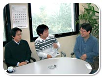吉良 ゲームボーイアドバンスが発売される頃、面白いゲームを作れるメーカーさんを探していまして。で、アーケード版の『パズループ』をプレイして、個人的にかなり面白く感じたんですよ。そこからミッチェルさんに注目していて、コンタクトを取ったのが始まりです。『直感ヒトフデ』はミッチェルさんを訪問した時、開発用の作りかけ画面をたまたま見かけたのがきっかけだったんですけど、その時は「なんじゃこりゃ」という感じですごいインパクトでした(笑)。
萩原 その時のものはプロトタイプのまたプロトタイプという感じで、１週間程度で作ったものが目に止まったんです。これをニンテンドーDSでどうにかしようなんて全然考えていませんでしたから、運のいいゲームだと思います(笑)。気づいたら流れでそうなっていた、という感じでいまに至ります。
N.O.M 新ハードに対応させるということで、やはり苦労があったと思うのですが。
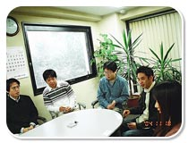赤石 これまでアーケード版の作品ばかりを作っていたので、確かに大変な部分はありました。ニンテンドーDSのまえに、ゲームボーイアドバンスがありますね。ニンテンドーDSのゲームを作るには、まずゲームボーイアドバンスを理解しているという前提で開発しなくてはならない。でもうちはいきなりだったので、なにから手をつけていいものやらと…。
吉良 あとは、無線通信対戦の実装で試行錯誤しました。これまでの通信ケーブルが、無線に置き換わっただけとはいえ、どうしたらいいのか、かなり考えました。
赤石 初めてのハードということで、開発環境自体も平行して開発していました。ライブラリの変更もしょっちゅうで、ドキュメントが足りないとか、とにかくいろいろと。任天堂さんから連絡が来ては「ああ、またバージョンアップか…」ということもたくさんありました(笑)。
水野 私は逆に苦労というものはあまりなかったです。すでにやりやすい環境を作ってくれていたので、スムーズにできました。萩原のなかにはゲームのイメージがあって、それを具体化していく部分では色々とやりとりがありましたけど(笑)。「違う、こうじゃない」とダメ出しされて、でもわからなくて…というような。 |
|
 |
 |
|
N.O.M 確かに新ハードに飛び込むには苦労も多いですよね。ゲームそのものに関してはどうでしょう？
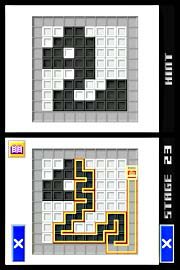吉良 これはまずさわって欲しいソフトなんですよね。とにかく手に取って、プレイすればわかる。すごくシンプルなんですが、それを文章でわかるように説明するとなると意外に大変なんです。どうすれば伝わるか、かなり考えました。
萩原 ゲームのベースの部分は、最初に作った所からほとんどと言っていいほど変更がありませんでした。でもシンプルゆえにゲームの世界観を崩さないで通すのが大変で。やっぱり何らかのキャラクターがいた方がいいんじゃないかとか、画面をカラフルにした方がいいんじゃないか、みたいな話もたくさんあったんです。
赤石 途中で「アヒルを入れたい」とかいう話もあったんですよ(笑)。
吉良 ゲームを売り出すには、やはり目を引くものや確固たる世界観がないと…という葛藤はありました。でもシンプルにしたいということは、萩原さんと私のなかで一致した部分だったんです。最新鋭のゲーム機で２色しか使っていないというのが、最近のゲームに対するアンチテーゼになるかなとも思いますが(笑)。
萩原 ゲームの基本・原点に帰ったものを作ろうという話になりまして。任天堂さんとしてもこれはギャンブルだったと思います。シンプルだからこそ、このゲームには「一切のごまかしがない」ということですから。
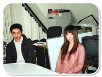熊谷 世界観を決めるにも結構な時間がかかりました。『和風』『かわいい系』『シンプル』という３つの選択肢があったんですが、それぞれのムービーを作ってプレゼンテーションしたんです。そこから『シンプル』に決まりました。
N.O.M 『和風』ですか？(笑)
熊谷 竹とか毛筆の世界で、テーマは"侘び寂び"です(笑)。
N.O.M このプレゼンを受けて、任天堂ではどういった反応だったんでしょう。
吉良 ハッキリ割れました。女性からは「かわいいものがあった方がいい」という声が上がり、「海外に対応させるにはキャラクターが必要なんじゃないか」という話も出て。でも、そういった割れた部分はこう、私が寄せてですね(笑)、結局いろいろと比較した結果ではシンプルがいちばんいいということになったんです。
萩原 逆に色がたくさんあったら、このゲームはやりづらいと思うんですよ。「より白らしい白」「より黒らしい黒」というのをくっきり見せようと思いました。"無機質"というのを大切にしたかったんです。
N.O.M 本体と同時発売ですが、それを想定して開発していたんでしょうか。
吉良 同発で決まったのが、かなりギリギリで。年内に出すかどうかも決まっていなかったんですが、しぶとく生き残ったという感じです。パズルの問題作成をするにも手作業でしたし、同発を目標にしていましいたが、間に合うかどうか、常に不安はありました。
萩原 100問（チェックメイト）考えるのは、デザイナーに頼んだり、任天堂さんにも考えてもらったりしたんですよ。
吉良 問題作りもわりと楽しい作業で、ほかの仕事をしていて行き詰まったら問題作りに手を出したりすると、これがいい気分転換になってスイスイ進むんですよね。
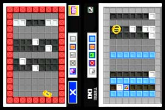萩原 作ってもらうにも「解けるように」という頼み方ではなくて、絵的なもの、形だけのものを作ってもらったりして、そのドットや色をこちらで入れ替えるようなやり方をしていました。そこからさらに難易度別に分けて…というように振り分けしていったんです。
N.O.M 簡単に解けないようにするには、問題を作る人により高度な知性が要求されるのでは？
萩原 そこは“直感”ですよ(笑)。
吉良 「これは解けないだろう」と苦労して作っても、解かれてしまう時の感覚やギャップがまた面白いんですよね。今度は解けない問題を作ってやる！ みたいに。 |
|
|
|
|
N.O.M 『直感ヒトフデ』というタイトルも一風変わっていますが。
吉良 最初は『SEN』というタイトルでした。社内では「内容もシンプルなのに、タイトルまでシンプルにするのは損じゃないのか」という声が上がりまして。あれこれ考えた結果、操作そのものを表す『直感ヒトフデ』に落ち着きました。
N.O.M シンプルだけどついついプレイしてしまう面白さがありますよね。
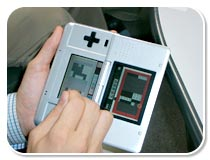吉良 “カタカタ…”と音がすると気持ちいいですよね。社内でも、どこからともなくこの音が(笑)。BGMもあるんですが、邪魔にならないように配慮しました。ピースが消えていく爽快感がいちばん大切ですし。このゲームはどれがメインのモードということではなくて、３つのメインがあると考えて欲しいです。１人がソフトを持っていれば、無線通信で体験版が配布できます。だからソフトを持ってる人から体験版をもらって、ぜひ遊んでみて欲しいですね。
N.O.M ゲームを作っている時はどういったことを考えておられますか？
萩原 やはり自己満足にならないようにしたいです。時々はまってしまうことがあるんですが、忘れっぽい性格なのですぐ抜けちゃいますけど(笑)。
赤石 基本的にプログラマーなので、制作中は仕様に関して考える余裕がないです(笑)。アイディアを提供する時には、ゲーム内の流れや駆け引きについてよく考えていますね。
水野 私はディレクターとは逆で、自己満足するためにやっているように思います。この仕事は自分のなかで思い描いたものを表現すること、自分を突き詰めていって好きなものを出していくことなんじゃないかと。
熊谷 特に考えてはいないです(笑)。このゲームを作っている時は毎日、萩原にダメ出しされました。でもやっぱり忘れっぽいので、クヨクヨ考え込まずにすぐつぎの作業に移ったりという感じでした…(笑)。
N.O.M では期待に胸をふくらませている、読者へのメッセージをお願いします。
赤石 プレイすると、反省と満足が交互に味わえるゲームです。自分なりのプレイスタイルができてくると、一段と面白くなってくるはず。その分、失敗した時の落ち込み方も激しくなりますが(笑)。ぜひ遊んでみて下さいね。
水野 『直感ヒトフデ』はいろんな人にプレイして欲しいですね。白黒ピースを一面白に、または黒にするだけでなく、この列は白で…ここは黒で…ということを直感でやったり。逆にじっくり考えたりといった色んな遊び方が「ヒトフデ」にあります。言葉ではなかなか伝わらないと思うので、ぜひともプレイしてみて下さい。
熊谷 エディットでは自分で問題が作れるのがまた楽しいので、チェックメイトで出された問題だけではなく、ぜひ自分でも問題を作って遊んでみて下さい。
萩原 違った遊び方のモードが３種類用意してあるので、色々な人が楽しめるようになっています。パズルゲームが得意な人もそうでない人も、『直感ヒトフデ』でタッチして遊ぶ新しい感覚を楽しんで欲しいです。
吉良 ある瞬間から突然、「俺って天才かも！」と感じるようになる不思議なゲームです。見た目はモノトーンで地味ですが、とても手応えのあるパズルゲームですので、手にとって遊んでみて下さい！
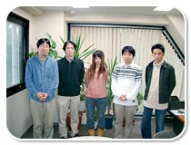
N.O.M 私も楽しみです！ どうもありがとうございました！ |
|
|

|